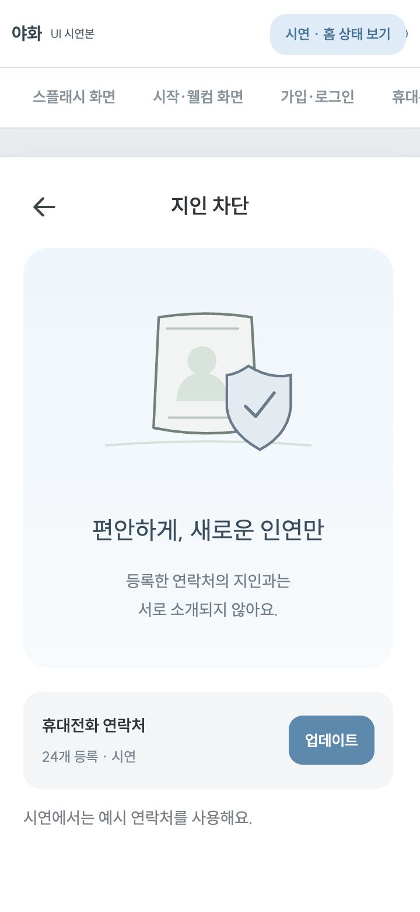
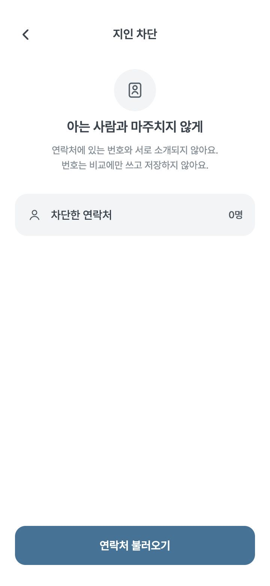
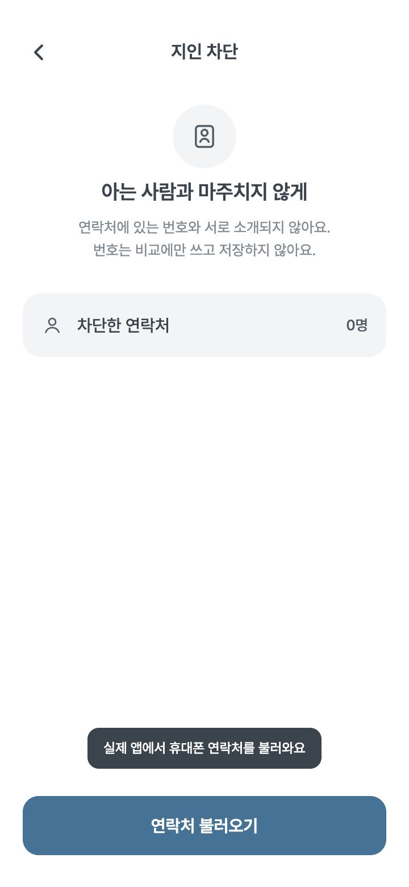
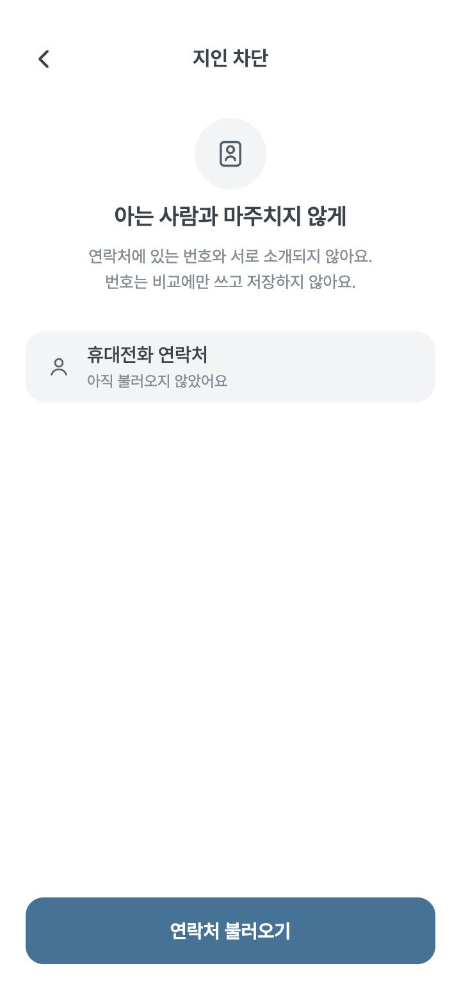
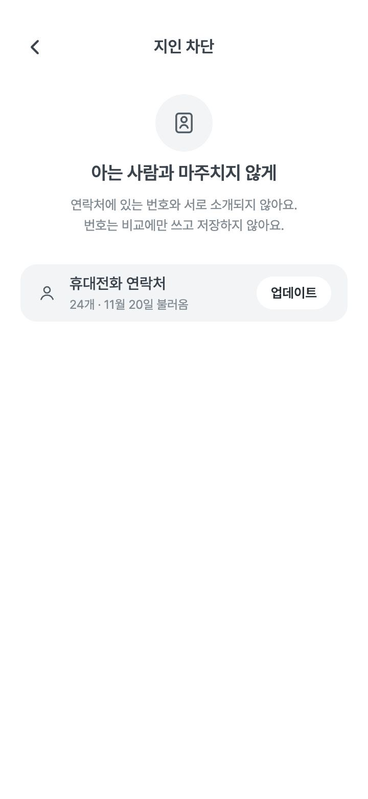
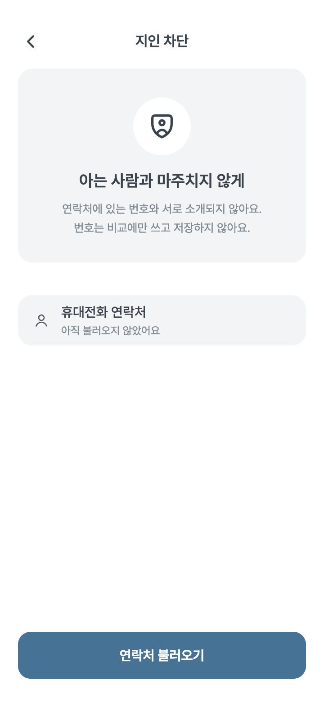
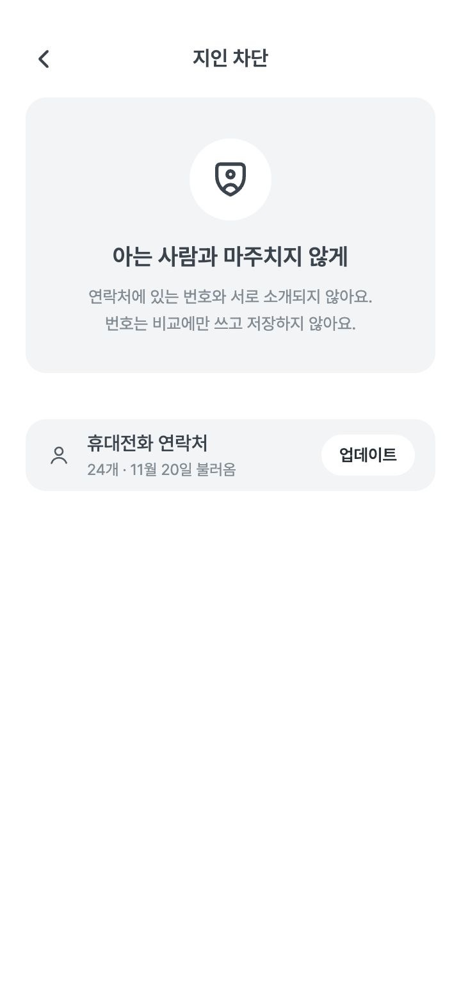
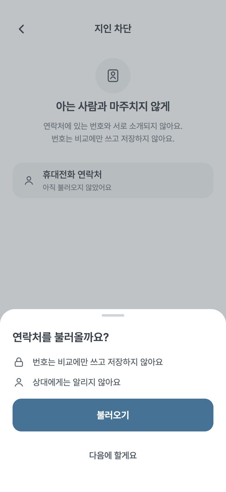

지인 차단 · 팀 링크에 맞추기
- 팀 링크: 일러스트 + "편안하게, 새로운 인연만" → 카드 "휴대전화 연락처 · 24개 등록" + 오른쪽 "업데이트". 불러온 뒤 상태가 화면에 남아요.
- 우리 · 빠진 것: "연락처 불러오기"를 눌러도 알림 한 줄("실제 앱에서…")뿐이고 화면이 그대로예요. 카드는 "차단한 연락처 0명"으로만 보여요. → 불러온 뒤 상태가 있는데 빠졌어요.
- J1: 지금 모양 그대로 + 카드를 "휴대전화 연락처"로. 불러오기 전 "아직 불러오지 않았어요" · 아래 버튼 "연락처 불러오기", 불러온 뒤 "24개 · 11월 20일 불러옴" + 카드 안 "업데이트"(흰 알약), 아래 버튼은 사라져요.
- J2: J1 + 위 안내를 회색 카드로 묶고 아이콘을 방패 · 사람(Figma Line Duocolor shield-user, 뉴트럴)으로. 팀 링크 첫 카드 결.
- J3 (덧붙임): 불러오기 전에 짧은 시트 "연락처를 불러올까요?" — 번호는 비교에만 · 상대에게 알리지 않아요 · 불러오기 / 다음에 할게요. J1 · J2 어느 쪽에도 붙일 수 있어요.
팀 링크 · 지금 우리




J1 · 지금 모양 + 불러온 뒤 상태


J2 · 안내를 회색 카드로 + 방패 아이콘


J3 · 불러오기 전 확인 시트
